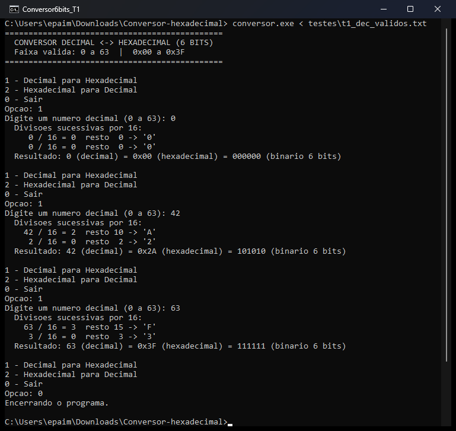
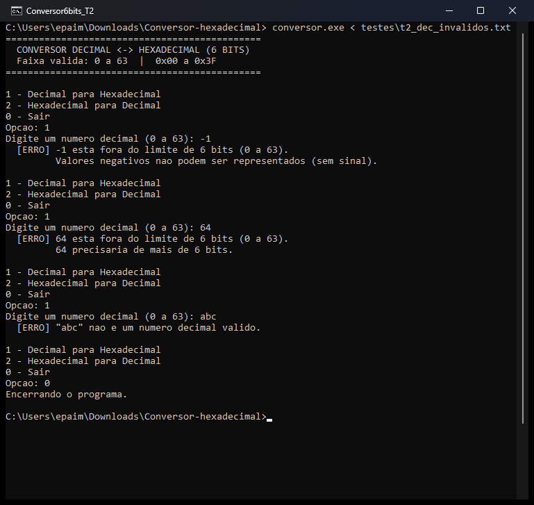

Arquitetura e Organização de Computadores
Como um programa em C transforma números do nosso dia a dia na “língua” do computador
Nossa viagem: do dia a dia até o código
Por que o computador precisa de outra “língua” e onde ela aparece no dia a dia
Decimal, binário e hexadecimal: contar nos dedos de jeitos diferentes
Por que só cabe de 0 a 63 e o que acontece quando estoura
Como o programa em C faz a conversão, passo a passo
O computador só entende 0 e 1. A gente não.
101010 é cansativo e fácil de errar.101010 = 42 = 0x2A
Ele está escondido em várias coisas do dia a dia
Todo site escreve as cores em hexadecimal. #FF0000 é vermelho puro.
Aquela tela de erro com um código estranho? É um número em hexadecimal.
Cada placa de rede tem um “RG” (endereço MAC) escrito em hexadecimal.
Muda só quantos símbolos cada sistema usa
| Sistema | Base | Símbolos | Quem usa |
|---|---|---|---|
| Decimal | 10 | 0 1 2 … 9 | A gente, no dia a dia |
| Binário | 2 | 0 1 | O computador por dentro |
| Hexadecimal | 16 | 0 … 9 A B C D E F | Programadores, para ler o binário |
Cada sistema é como alguém com uma quantidade diferente de dedos
Temos 10 dedos. Quando acabam, anotamos “1 mão cheia” e começamos de novo: é o 10.
Só tem 2 “dedos”: ligado e desligado. Por isso enche rápido e o número fica comprido.
Imagine alguém com 16 dedos. Ele conta muito mais antes de “virar a casa”, então o número fica curtinho.
6 bits = 6 lâmpadas que podem estar acesas (1) ou apagadas (0)
Todas acesas: 32 + 16 + 8 + 4 + 2 + 1 = 63 → 111111 → 0x3F
“Estouro” acontece quando o número é maior do que o espaço guardado para ele
Um hodômetro de 5 dígitos que passa de 99.999 km volta para 00.000. Faltou espaço.
Em 2014 o vídeo chegou tão perto do limite do contador de visualizações que o YouTube teve que aumentar o número de bits.
Com 6 bits, o 64 já não cabe. Em vez de mostrar um valor errado, o programa avisa o erro.
Primeiro no caderno, com o número 42
Lendo os restos de baixo para cima:
Tudo o que o programa faz, em 4 passos
Logo no começo do programa, definimos o tamanho e os limites
#define NUM_BITS 6 #define VALOR_MIN 0 #define VALOR_MAX ((1 << NUM_BITS) - 1) /* 2^6 - 1 = 63 */
Antes de converter, o programa confere se o número pode entrar
static int dentro_do_limite(long v) { return v >= VALOR_MIN && v <= VALOR_MAX; /* 0 <= v <= 63 */ }
Antes disso, ler_decimal() confere letra por letra se o que foi digitado é mesmo um número (recusa “abc”).
As mesmas duas divisões por 16 do caderno, só que em C
static void decimal_para_hex(int valor, char saida[3]) { int quociente = valor; saida[1] = digito_para_hex(quociente % 16); quociente /= 16; saida[0] = digito_para_hex(quociente % 16); saida[2] = '\0'; }
% 16 pega o resto da divisão./= 16 divide e guarda o resultado."0123456789ABCDEF".O programa também mostra o número em binário
for (int i = NUM_BITS - 1; i >= 0; i--) saida[NUM_BITS - 1 - i] = ((valor >> i) & 1) ? '1' : '0';
42 → 101010

O programa mostra a conta passo a passo, como no caderno.

Em todos os casos o programa avisa o erro e não trava: volta para o menu.
Quanto dá em hexadecimal? (resposta embaixo, sem espiar)
o maior número de 1 dígito: F
2 grupos de 16, sobra 0
pegadinha: não cabe em 6 bits
O que aprendemos com o projeto
Abra no celular ou no computador e converta qualquer número de 0 a 63
Aponte a câmera para o QR code ou acesse:
paimedu-dev.github.io/
Conversor-hexadecimal
Obrigado! Perguntas?
Vitor · César · Eduardo · Felipe